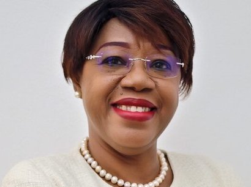
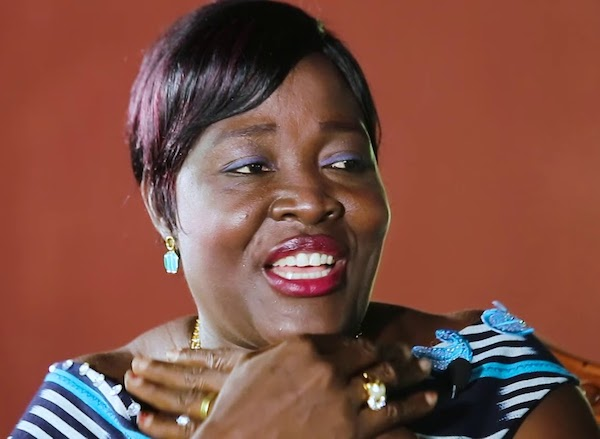

Euphrasie Kouassi Yao
"Nous allons essayer de faire un bilan et d'évaluer l'ampleur des
efforts déployés dans un pays du continent, la Côte d'Ivoire. Nous
en discutons avec Euphrasie Kouassi Yao, titulaire de la chaire
UNESCO sur les femmes et le pouvoir."
Decouvrez l'interview d'Euphrasie Kouassi Yao sur les droits des
femmes en Côte d'Ivoire.
Euphrasie Yao est connue pour son engagement en faveur de l'éducation et de l'autonomisation des femmes, notamment en Afrique. Elle a travaillé sur plusieurs projets visant à améliorer l'accès à l'éducation pour les filles et à promouvoir des initiatives qui soutiennent leur développement personnel et professionnel. Elle est également impliquée dans des campagnes de sensibilisation sur les droits des femmes et des enfants. Son travail met souvent en lumière les défis auxquels font face les femmes dans divers contextes, tout en encourageant des solutions durables.
TIA Philomene EPSE GLAO
"À seulement 17 ans, Mme Tia Glao a subi l'abus de ses droits en
étant mariée à un homme beaucoup plus âgé. Écoutez son histoire
marquante, celle d'une femme qui est partie de rien et a su
surmonter les obstacles pour bâtir sa vie".

Tia Philomène, pionnière du transport en Côte d'Ivoire avec sa compagnie MT International, incarne la force des femmes dans des secteurs dominés par les hommes. Bien qu'elle n'ait pas eu la chance de faire des études, son parcours exceptionnel lui a valu le titre de femme leader en 2016. Elle inspire les femmes africaines à surmonter les obstacles et à investir dans l'éducation de leurs enfants. Son message est simple : « Apprenez de vos échecs et ne laissez jamais les difficultés vous freiner. » Tia prouve que la détermination peut transformer des vies et ouvrir la voie à l'égalité des sexes.

Kadhy Touré
"L'actrice et productrice Kadhy Touré témoigne de sa résilience
dans son premier livre."
Kadhy Touré est actrice, productrice, présentatrice de télévision
et entrepreneuse, cumulant avec brio des rôles qui témoignent de
sa passion, de sa résilience et de sa créativité. Découvrez son
interview par Fatimata Wane, sur le plateau de France 24.
Actrice ivoirienne, traductrice de langues anglais/français et responsable communication d'entreprise, Kadhy Touré a réalisé des exploits dans le monde cinématographique à l'extérieur avant de s'installer définitivement en Côte d'Ivoire dans l'optique d'aider au développement du cinéma ivoirien.